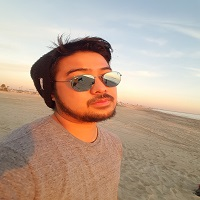
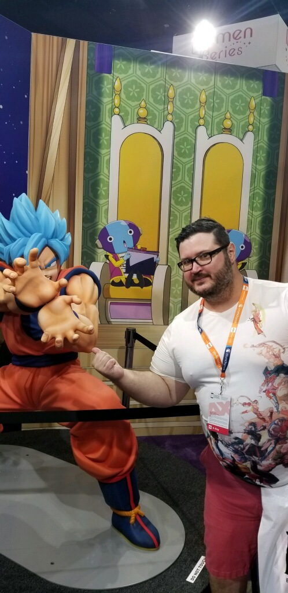

We're a couple of old school gamers from California that love to play retro and modern games, as well as sharing our interests with other gamers.
 Garth was born and raised in northern California and moved to southern California during his teen years. He started gaming during Chirstmas of 1991 in which his gift and first gaming console was an NES (Nintendo Entertainment System). He enjoyed playing the system throughout his childhood until he acquired an SNES (Super Nintendo), which triggered his interest in gaming. When his parents don't want to buy new titles for any of the systems, Garth resort to borrowing games from his fellow classmates so he can experience new titles that were popular within the mainstream gaming industry. At the age of 9, Garth started to play Sony's PlayStation at his cousin's place. At this point, he was introduced to real 3D gaming. Many years later while attending the University of California, Riverside, Garth started to collect retro video games to relive his childhood.
 Alex was born in Romania and migrated to the United States when he was 6. By 7 years old, his family got a laptop that ran MS-DOS and played Missle Command and Rampage. At that moment, he became an instant lover of video games. His next gaming venture was the NES. This was when he discovered Mario Bros. and Castlevania and other great titles. During his childhood and teen years, Alex owned numerous systems such as the SNES, PS1, PS2, gamecube, etc. and as he grew into his adult years, he got a job as an IT and started collecting retro games and relived his childhood once again. After a while, Alex was big into collecting. Other then just the mainstream systems, he also collected systems and games that were obscure and not popular in his days. Currently, Alex has over 600 games and still enjoying the hunt and the history of retro gaming.